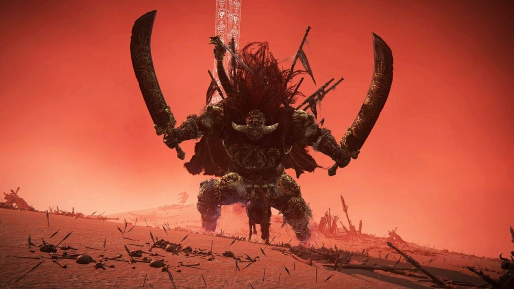
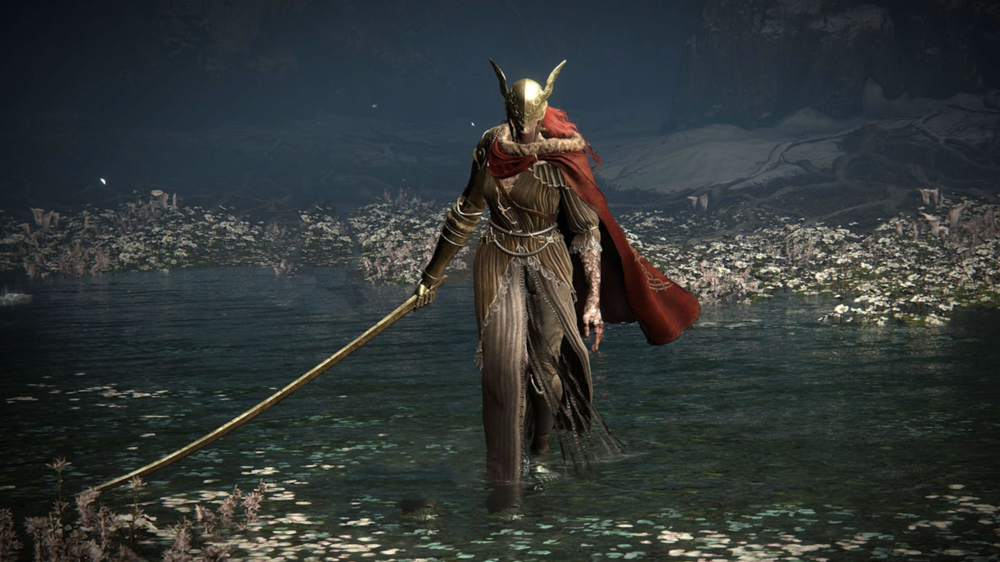

Starscourge Radahn is one of the demigod bosses that all players must defeat. He is a colossal figure, heavily armored, and wields two massive greatswords. Radahn is associated with the Starscourge, a mysterious and corrupting force that has ravaged the lands between. Throughout the game, Radahn is portrayed as a formidable adversary, embodying the power of the Starscourge. Players encounter him in a grand arena, where they engage in a challenging battle that requires skill, strategy, and reliance on ones allies to overcome.


Malenia, Blade of Miquella is known as the hardest boss in Elden Ring and one of the most difficult bosses in video games. At the beginning of your fight with her she speaks to you, "I dreamt for so long. My flesh was dull gold...and my blood, rotted. Corpse after corpse, left in my wake. As I awaited...his return. Heed my words. I am Malenia. Blade of Miquella. And I have never known defeat."